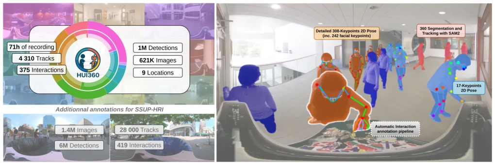
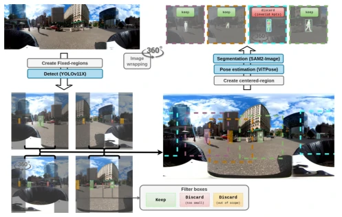
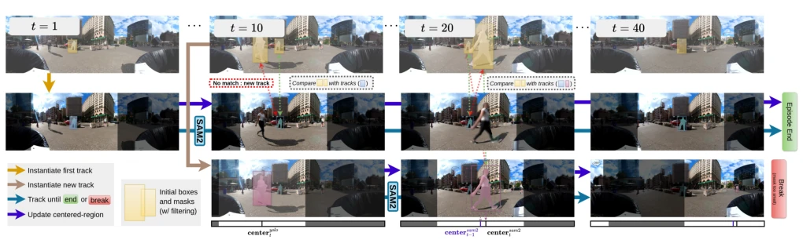
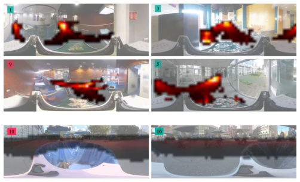
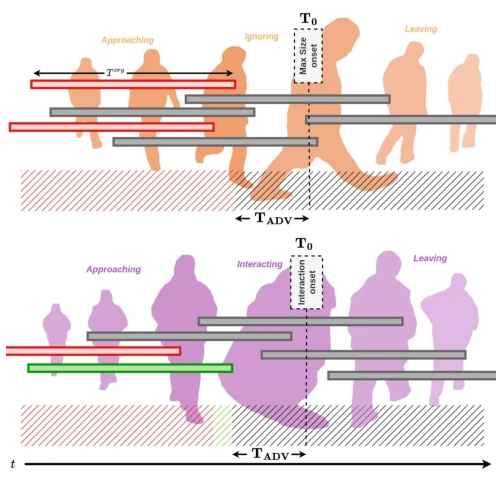
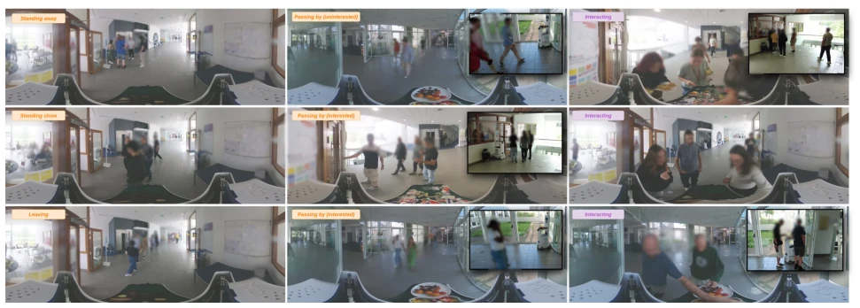
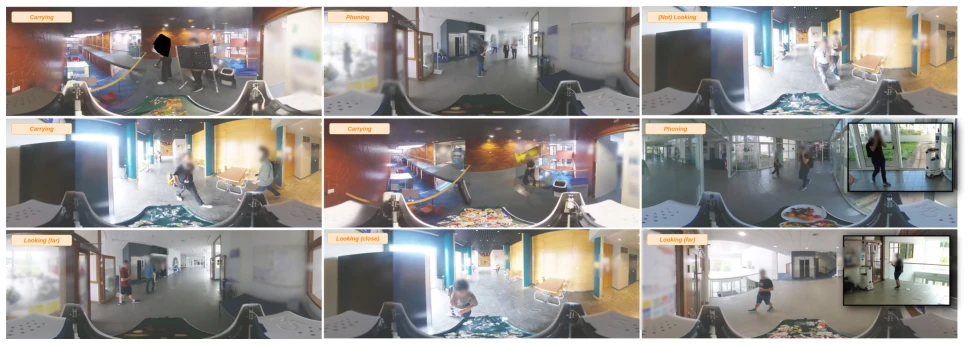
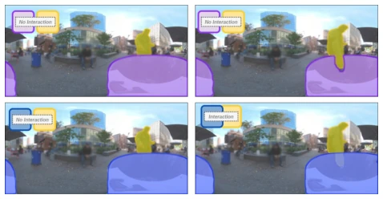
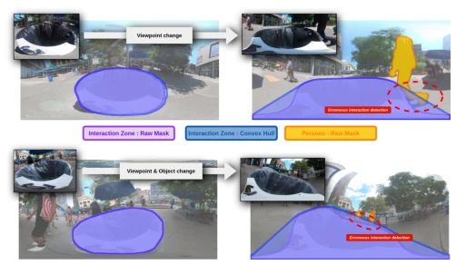
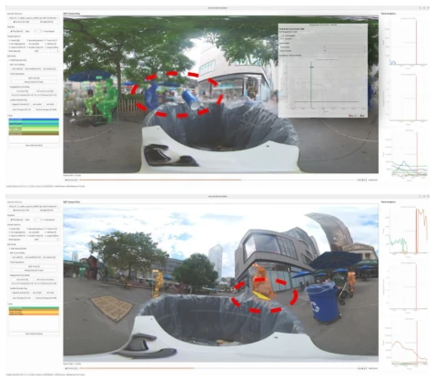

This paper adds another "brick" to the embodied AI community—the HUI360 dataset. Although the 360° panoramic view indeed gives robots a "God's eye view," the authors' definition of "interaction" is too rigid, recognizing only physical contact (e.g., grasping, placing), while discarding social signals such as eye contact and hesitation. Claiming this is for objective labeling, it actually sacrifices the soul of social robots. Baseline models show LSTM significantly outperforming MLP and RF, but is this a novelty in the HRI field? Regardless, the data volume is indeed large, and cross-dataset transfer tests were conducted; however, performance dropped significantly, indicating the model is still too dependent on specific environments. Overall, it is a decent benchmark, but do not expect it to solve all social challenges, as for "intent," just seeing hands not reaching the plate is not enough.
For robots to actively interact in human environments, they must first guess what humans intend to do. However, the definition of "intent" in existing literature is vague, with some relying on eye contact [2] and others on speech [16], resulting in high subjectivity in labeling. Existing datasets are either too small [5] or have single scenarios [9], lacking natural behavior data in the wild. HUI360 attempts to solve these problems, providing large-scale, multi-environment 360° data. Meanwhile, existing work lacks reproducible benchmarks and cross-domain evaluation [1], leading to doubts about model generalization capabilities. The authors aim to avoid the subjectivity of "intent" through clear definitions of physical interaction (e.g., grasping), construct a dataset that can be automatically labeled at scale, and establish a cross-dataset evaluation protocol to provide a unified standard for future research.
The overall process is divided into four steps: collection, preprocessing, labeling, and modeling. In the collection phase, a mobile robot recorded 360° videos in 9 different environments over 3 months, covering indoor and outdoor scenes. Preprocessing uses YOLOv11x to detect humans, SAM2.1-L for segmentation and tracking, and ViTPose-B and Sapiens-0.6B to extract 2D pose keypoints, with the latter providing 308 keypoints including the face. In the labeling phase, interaction zones (e.g., robot tray) are defined, and interaction is automatically determined by intersecting segmentation masks with the interaction zone, supplemented with manual correction. In the modeling phase, features (mask area, bbox, keypoints) are extracted and input into MLP, LSTM, RF classifiers. For negative samples, the time when the person is largest in the field of view is selected as T0 to avoid invalid negatives from distances that are too far. In data splitting, HUI360 and SSUP-A are trained and tested separately, supporting cross-dataset transfer.
Experiments compared three baselines: RF, MLP, and LSTM. LSTM performed best on the AUC metric, but performance dropped significantly during cross-dataset transfer, indicating robot platform differences have a large impact. Prediction capability tests show that the longer the lead time (T_ADV), the lower the accuracy, with AUC dropping to around 0.77 at 2 seconds prediction. Input frequency robustness tests indicate performance collapses when frame rate drops to 1Hz, highlighting challenges under limited real-time computing resources. Ablation experiments show Sapiens' high-dimensional keypoints are comparable to ViTPose in effect, but with higher computational cost. Overall, this validates the importance of data scale and temporal modeling.
其他图片Other Figures

Fig. 1. Overview of the content of HUI360. The dataset comprises 4 310 tracks forming more than 1M detections over time, for each of them we provide a segmentation mask as well as detailed 2D Pose Keypoints, images are available on request for research purposes. The dataset is diverse (9 environments) and interaction are automatically annotated. Automatic tracking and interaction annotation is manually reviewed and corrected. Additional annotations enabling cross-dataset studies have been generated from the data of SSUP-HRI [1] using our automated pipeline.

Fig. 2. Detection and filtering process in equirectangular images: the process of detection uses 4 overlapping fixed regions of the image with wrapping. Filtering is done based on box size, mask size and number of valid keypoints.

Fig. 3. Tracking and segmentation pipeline in equirectangular images: using SAM2 new tracks are instantiated from the filtered detections and processed using a mobile region of the image until it breaks or reaches the end of the episode - then the next track is instantiated from the next non-overlapping detection.

Fig. 4. Heatmaps of the ankles position of all tracks in HUI360 (top two rows) and SSUP-A (bottom row). Note that data in SSUP-A are recorded with moving robots, the background images only serve as illustrations and are not geometric references.

Fig. 5. Temporal rationale of input labelling and sampling. On top an non interacting track. Segments in green represents possible positive inputs

Fig. 6. Diverse groups composition and behaviors. We show an external camera capturing the scene to make it easier for the reader to understand the group positions in front of the robot.

Fig. 7. Diverse non-interacting individual behaviors. We show an external camera capturing the scene to make it easier for the reader to view the behavior of the passerby.

Fig. 9. Using the convex hull instead of the raw segmented trashcan in SSUP-A to detect interactions based on masks intersections

Fig. 11. False positives in SSUP-A when using intersection of persons masks with interaction zone convex hull under skewed viewpoint

Fig. 12. Example of corrections made to automatic interaction detection in SSUP-A. Screenshots of the visualization/correction tool.